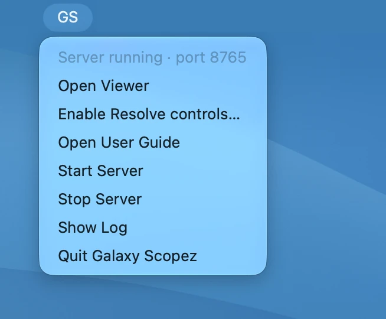

This release requires macOS 27 or later. You need DaVinci Resolve on a Mac, a recent web browser, and a shared local network. GTap is the Resolve effect that sends the picture to Galaxy Scopez. Nothing needs installing on your phone or tablet.
Download the latest Mac installer (.pkg). Quit DaVinci Resolve and stop any older Galaxy Scopez (formerly Ghetto Scopez) host before installing.
Double-click the installer. Follow the macOS Installer steps and enter your administrator password when asked.
Find GS in the menu bar. The installer includes GTap, the server and its runtime. A Galaxy Scopez alias with the app icon is added to your desktop. Double-click it to start the app and server; if the app is already running, it opens the GS menu with Start Server and Stop Server. The server starts after installation and at login. No Terminal, developer tools or separate Node.js installation is required.
Open Resolve and add GTap. Follow the connection steps below. Use GS → Open Viewer or Open User Guide on the Mac, and GTap’s network address on another display.
Use GS → Stop Server to stop serving scopes, and Start Server to start again. Quit Galaxy Scopez stops the server and closes the menu-bar app until you open it again or next log in. To reopen it, launch Galaxy Scopez from Applications. Show Log opens the server log.
The universal installer supports Apple silicon and Intel Macs. It is signed with Developer ID and notarised by Apple, with the notarisation ticket attached for offline verification. Allow local network access if macOS asks, otherwise this will not work.
After installation, the first-launch setup explains the optional Resolve shortcut permission. Choose Enable to set it up, or Set Up Later to continue using the scopes. You can return to GS → Enable Resolve controls… at any time. The permission can also be changed in System Settings → Privacy & Security → Device Control and Data Access (Accessibility on older macOS).
Update or remove
To update, quit Resolve, stop the old host and run the new installer. Then reopen Resolve. Saved viewer settings stay in the browser when you use the same address.
To remove Galaxy Scopez, quit Resolve and choose GS → Quit Galaxy Scopez. Delete /Library/LaunchAgents/com.vidarandersen.ghettoscopez.plist, /Applications/Galaxy Scopez.app and /Library/OFX/Plugins/SignalLabTap.ofx.bundle, then log out and back in. macOS may ask for your administrator password.
GS: the menu on your Mac
GS is the Galaxy Scopez app in your Mac’s menu bar. It runs the server that connects Resolve to your browser displays. Click GS at the top of your Mac’s screen to open its menu.

The GS menu gives you quick access to the viewer, guide and server controls.
Server running · port 8765
The status line shows whether the server is running and which port it uses. It changes when the server stops or cannot start.
Open Viewer
Opens the viewer in the default browser on this Mac. To use a tablet or another display, open the network address shown in the GTap OFX plugin settings panel on the node where you added it.
Enable Resolve controls…
Requests the macOS permission used by GPrime’s native clip shortcuts: Previous/Next clip, Apply Prior, Undo and Clip Fullscreen. Follow the permission prompt in System Settings. You can return here to enable it later. Connect the GPrime grading controls for the complete setup, including Resolve’s separate Local external scripting setting.
Open User Guide
Opens this online user guide.
Start Server
Starts the server so GTap and your browser displays can connect. If it is already running, it keeps running.
Stop Server
Stops the server and disconnects its viewers. The GS menu remains available, so you can use Start Server to resume.
Show Log
Opens the server log on your Mac. Use it to investigate startup or connection problems.
About Galaxy Scopes
Shows the same information as About GTap: credits, signal handling, where to place GTap and how to connect the viewer. Project website opens the online user guide.
Quit Galaxy Scopez
Stops the server and closes the GS menu-bar app. Open Galaxy Scopez from Applications or its desktop icon to launch it again; it also starts at your next login.
Connect Resolve to your screen
Open Resolve and add GTap. On the Colour page, find GTap in the Effects library and add it to a serial node.
Put the node after the image conversion you want to measure. For display-referred scopes, place GTap after your output Colour Space Transform. Anything after GTap is not included. Resolve’s automatic colour-managed output transform can happen after the node graph.Place GTap immediately after the node that converts the image to the display space.
Set GTap’s input colour space. For display-space readings, choose the BT.709 or BT.2020 primaries that match the RGB reaching the node. For readings before the display transform, choose Source / working-space RGB — no transform. GTap does not convert the image or change its appearance.
Open the viewer address. GTap’s panel shows the host status and scope address. Click Open this address in the GTap panel to open it in this Mac’s default browser, or copy the address into the browser on another device on the same network.
Tap Start listening. Open Controls to find it, or tap Fullscreen to start listening automatically. Play or scrub a clip if there is no picture yet.
GTap shows the input display space, host status and the address to open on your other screen.
Choose the matching display space.
The scopes measure the image at GTap’s node. Choose the input declaration and level range to match that image.
Measure your working space
Place GTap at the point in your grade you want to measure, before the display transform. In GTap’s Input menu, choose Source / working-space RGB — no transform.
The scopes read the float32 RGB values supplied to GTap. Negative values and values above 1 are retained; widen the measurement level range in Settings to see them. RGB parade, histograms, DoubleD and the colour cube use these raw values.
The working-space notice identifies this mode. Waveform and tonal splits use weighted RGB with fixed BT.709 coefficients; vectors use the corresponding RGB differences. These are numerical views, not calibrated working-space luma or display chroma. Display targets and the skin-tone guide are hidden, and axes show float values. Preview and trace colours are raw visualisations without a display transform.
This option does not detect or convert your project’s primaries, gamma or log encoding. To measure a display conversion instead, put GTap after that conversion and choose the matching encoded BT.709 or BT.2020 option.
Add Galaxy Scopez to your iPad’s Home Screen
Open your scopes and GPrime with one tap, in their own app window. The Home Screen web app uses the screen without requesting Safari fullscreen, avoiding the annoying swipe-to-exit behaviour that can interrupt grading gestures.
Start Galaxy Scopez on your Mac, keep the iPhone or iPad on the same network, and open the viewer address from GTap in Safari.
Tap Safari’s Share button. It is the square with an arrow pointing up. The first screenshot highlights it at the top right.
Keep Open as Web App turned on, then tap Add. You can rename the shortcut before adding it. If you use different Macs, names such as Home studio, Office or Laptop make each Mac’s shortcut easy to recognise.
Return to the Home Screen and tap the Galaxy Scopez icon. The viewer opens with a compact header: Start / Stop controls listening, and Reload refreshes the interface. In Home Screen mode, interacting with any scope starts listening automatically if it is stopped, including DoubleD in a single-scope layout. GPrime grading controls also start listening when touched. Your last Start/Stop choice is remembered when you reload.
Fullscreen view: highs, mids and lows on the left, DoubleD on the right. Tap the image to view it at full size.
Choose a scope
Tap a scope’s title to change it or choose Off. Use an Add scope menu above the plots to fill an empty position. Up to four scope positions are available. You can choose the same scope in more than one position: each copy has its own mode, colour options, zoom, settings and A/B/C references. GPrime, Scopez Quest and the synthesizer each use one position only.
Choose a layout
Open Settings to choose Single scope, Two scopes side by side, a balanced grid, a row, a stack or a group beside the main scope. The two-scope layout gives both plots equal space. If all scopes are off, tap Choose layout in the middle of the screen. On a phone in portrait, a single scope or vertical stack gives each plot more room.
Open Controls
Tap Controls to reveal listening, trace and overlay controls. The popup fades after a short idle period; tap Controls again to reopen it.
Go fullscreen
Tap Fullscreen for more space. Availability depends on the browser.
Adjust the trace
Tap Settings in a scope’s title bar to cycle that scope’s Zoom through 1× → 2× → 3× → 4× → 1×, or adjust its Gain, Brightness, Graticule and Smooth. The Zoom button follows pinch and mouse-wheel changes and affects only that scope. Above 1×, the scope’s header shows the current zoom and a Reset button, just as it does after pinch zooming. Tap it to return that scope to 1×. Q remains the shared detail setting. Graticule fades the reference markings without fading the trace. The popup uses a single row where space permits, wraps on smaller screens, and closes when you tap outside or leave it idle. Reset restores the current global Gain, Brightness and Smooth settings, resets zoom, and returns the graticule to full strength.
Use individual Settings to adjust this scope’s zoom, trace and reference markings.
Controls adjusts all scopes and sets the defaults for newly opened scopes. Global Gain keeps your local adjustments in proportion: changing it from 1× to 2× moves a scope set to 3× up to 6×. Global Brightness shifts each scope by the same percentage-point amount: 100% to 120% moves a scope at 80% to 100%. If a value reaches its limit, its relative adjustment is remembered so it returns when you move the global control back.
Global Smooth switches every open scope on or off. You can then override Smooth in any individual scope, even when it is off globally. Newly opened scopes inherit the current global setting. Q1–Q4 remains shared across all scopes.
In portrait orientation, the Controls popup wraps into multiple rows instead of requiring horizontal scrolling.
Gain brings faint trace detail forward. Brightness changes how bright the trace looks. These controls change the display, not your grade. Colour and smoothing options let you choose the trace appearance.
Use pinch or the mouse wheel inside supported scopes to zoom. Scope title bars and individual Settings popups block page zoom gestures. Scopes and their Settings popups disable text selection, dragging and copy menus. Use Reset to return to the starting view. Vectorscope magnification enlarges the trace while reference markings stay in place.
Detail Level changes trace detail independently of zoom. Cycle Q1–Q4 beside the zoom button in Controls, or choose Detail Level in Settings. Higher settings reveal finer detail but can be more demanding on your Mac and viewing device. Lowering Q does not crop the image.
Smooth softens trace detail to make the overall distribution easier to read.
The host indicator tells you whether the viewer is connected. The frame status tells you whether fresh data is arriving. A paused image can stay on screen while you compare or grade it.
The highlight and shadow boundaries can be adjusted in Settings.
Show excursion outlines
Tap Extents in the title bar of Waveform, Parade or a Vectorscope, including its Low, Mid and High views. Each scope remembers its own choice. GPrime’s Balance vectorscope also has an Extents setting; it is unavailable while Balance uses DoubleD.
The outlines come from the original, unsmoothed count bins. They keep faint excursions visible when Smooth is on. Waveform and Parade outline the lower and upper occupied levels in each column. Vectorscopes show an outer excursion envelope. These controls change the display only.
On the main Vectorscope, enable Extents and Combine to overlay Low, Mid and High envelopes in blue, grey and orange. The tonal boundaries follow your Low / Mid / High settings. Combined envelopes are also included when capturing that scope’s snapshots. Extents is separate from PAS warnings and does not change your grade.
Automatic HDR scales from GTap
Place GTap after the matching output transform and choose BT.2100 PQ / BT.2020 encoded RGB or BT.2100 HLG / BT.2020 encoded RGB. Waveform, Parade and Histogram automatically show the corresponding HDR signal scale in nits. A PQ or HLG button opens their HDR settings. BT.2020 primaries alone do not imply HDR; an unknown transfer or raw working-space input keeps the ordinary signal scale.
PQ uses the absolute ST.2084 scale up to 10,000 nits. HLG uses a neutral reference display: choose its peak under Settings → HDR, with 1,000 nits as the default. The reference assumes zero black and the BT.2100 system gamma for that peak. The scales describe the declared signal, not the brightness of your iPad or a measurement of a physical display. A luma-channel axis is a signal-scale reference, not a reconstruction of scene luminance.
Scale Parade display range expands a selected interval between low and high nit values. Choose the low and high nit values to inspect that part of the signal more closely. RGB and Y use the nit axis; Cb and Cr keep encoded chroma units, labelled beneath their panels. In YCbCr mode the selected encoded window is shared by all panels, while HDR brightness reference markers apply to Y.
Settings → Reference levels adds low/high markers to Waveform, Parade and Histogram. Ordinary markers use normalised values; the HDR controls use nits. They are visual references, separate from PAS thresholds. The optional PQ luminance waveform remains a separate Y-only measurement mode.
Put your hands on the grade. Use a professional color grading workflow: Adjust linear exposure, native Contrast, colour balance and HSV saturation directly from your tablet, with live scope feedback. Use both saturation ribbons together, move between clips, copy grade from clips prior, scrub clip to park it on your hero frame. Set up GPrime.
Waveform
See where bright and dark areas fall across your image. Choose luma, RGB or chroma views to inspect levels and colour differences.
Shows which hues are present and how strongly they contribute. Choose All colours, Near-neutral, Shadows or Highlights to look for subtle casts or compare colour across brightness ranges. Set up the hue histogram.
Parking assistance (PAS)
Parking on the hero is so yesterday. Now you can actually park your grade like you park your car! Hear audible warnings when highlights, shadows or saturation approach your chosen limits. Turn PAS on in controls, toggle on and off in the active scope.
Select an area
Measure just the part of the picture you want to check. Draw a rectangle in the source preview to limit all scope readings to that area, or reset the region to measure the whole frame again. Select an image area.
Isolate a color
Pick a colour from the source preview and narrow the range to see how it reads on the scopes. Set up colour isolation.
Scopez Quest
Across a trillion blazing galaxies, the intergalactic Prince of the Universe and his neon tiger seek diamonds beyond counting. Empires tremble. Stars bow. Fabulous destiny awaits.Across a trillion blazing galaxies, the intergalactic Prince of the Universe and his neon tiger seek diamonds beyond counting. Empires tremble. Stars bow. Fabulous destiny awaits.
Tap GPrime beside Scopes to open its dedicated grading page. This page always contains a single GPrime: you cannot remove it, change its scope type or add other scopes here. If its nodes are not assigned, the setup message and Node assignments button take you to Settings. The Home Screen app reopens the selected Scopes, GPrime or Settings tab after Reload. Return to Scopes to inspect your saved layout; its scope modes, zooms and references stay in place while you grade. When you return to Scopes, the live traces update to reflect your grade. Saved A/B/C snapshots remain available for comparison.
GPrime turns your tablet into a multitouch grading surface for DaVinci Resolve. The ribbons and live Balance vectorscope or DoubleD control assigned clip-level nodes, so the changes are part of your Resolve grade. You can keep working while the clip plays.
GPrime was made for the grading workflow I’ve used for the last couple of years—a workflow I’m very happy with and find intuitive. Both the workflow and node structure were inspired by Cullen Kelly, so massive props to him. Cullen’s YouTube channel is probably the best place to start learning—and understanding—how to grade like a pro. Also check out Cullen Kelly Color for a whole bunch of helpful, high-quality colour grading tools.
So why not use a control surface like the Blackmagic Design Resolve Micro Color Panel? I’ve been debating for ages if I should get a panel of some sort or not, but I haven’t bought one because I feel the whole paradigm is very much out of touch with my grading workflow; e.g. I don’t fight my grade into place by wrestling three trackballs of opposing parameters against each other until it kinda sorta fits. That seems to me as an antiquated and incredibly inefficient way to be grading today. So out of principle, I can’t get myself to buy one. BTW, one track ball would suffice for me for Balance, but I’m doing perfectly fine also without that one. I also think a Nano Panel with a display and only one trackball and some twisty turn-y knobs (8?) - just make a toggle to shift which controls the trackball and the row of potentiometers are actually controlling - is a missed BMD product opportunity so far. So before I go on a further rant here, suffice it to say - I made the second best thing for me, a multitouch interface for most tablets or phones, to suit my workflow.
The GPrime user interface on an iPad: Exposure and Contrast on the left, Color Balance in the centre, Saturation on the right. Navigate between clips, move the grade from one or two clip(s) prior forward to start grading a new clip, scrub clip to park on its hero - all happening live in Resolve, controlled by a multitouch remote interface - aka your tablet or your phone.
Install and apply the GPrime PowerGrade
When confused or in doubt, just use the supplied GPrime Node Tree. After installation, open Applications in Finder, right-click Galaxy Scopez and choose Show Package Contents. Open Contents → Resources → PowerGrades → GPrime_Node_Tree_v1. If you can’t find it, download the GPrime Node Tree here.
On Resolve’s Color page, open Gallery and choose a PowerGrade album. PowerGrades remain available across projects in the same project library.
Right-click in the album, choose Import, and select GPrime_Node_Tree_v1.drx.
Before grading, apply the tree to all the clips you plan to grade with GPrime. Select the intended ungraded clips in the Color page’s clip strip, right-click the imported still and choose Apply Grade. Check one clip’s node tree before continuing. Apply Grade replaces a clip’s existing grade, so do this before building your shot corrections.
Configure your input and output transforms for the footage and display, then fetch and bind the four grading nodes in GPrime.
Pictured above, the supplied clip level node tree Power Grade. The four Balance, Exposure, Contrast/Ratio, and Saturation nodes with their pre-defined properties are necessary for GPrime to work as intended. The rest of the nodes are added for convenience. You can use your own node tree too - GPrime let’s you map (bind) the respective nodes to the user interface in settings - and provided you have these four nodes with the necessary properties in there somewhere it should work with your node tree too.
The template is designed for DaVinci Wide Gamut / DaVinci Intermediate. Its →DWG input CST is disabled as supplied: set its input colour space and gamma to match your footage, then enable it if you need that conversion. Do not add a second conversion if your footage is already in the working space. The extra correction, window, NR and Trim nodes are optional.
Add GTap as the last Timeline-level node after your display space conversion node.
Control
Node setup
What the gesture changes
Exposure
Gamma: Linear
Uniform RGB Gain for linear exposure adjustment
Balance
Gamma: Linear
RGB Gain colour balance
Contrast
Pivot: 0.336 for this DWG/Intermediate tree
Resolve’s native Contrast; retain your intended S-curve setting
Sat Gamma / Sat Gain
Color Space: HSV; only channel 2/S enabled
Primaries Gamma and Gain on saturation, with H and V disabled
You can use your existing node tree instead. Assign a different node to each of Exposure, Contrast, Balance and Saturation. Check the node processing settings yourself; binding a node does not configure its colour space, gamma or channels.
Connect the grading controls
GPrime is tested with DaVinci Resolve Studio 21.2 on Apple silicon and iPad Safari. Open the Color page in Resolve. Under DaVinci Resolve → Preferences → System → General, set External scripting using to Local. Restart Resolve if it asks.
During first-launch setup, choose Enable for Resolve shortcuts. If you chose Set Up Later, choose GS → Enable Resolve controls… on your Mac. Allow Galaxy Scopez in System Settings → Privacy & Security → Device Control and Data Access (called Accessibility on earlier macOS versions). This permission lets GPrime use Resolve’s menus for clip shortcuts and Clip Fullscreen. Scopes work without it. You can change it later in the same System Settings panel. Make sure Resolve is active and has focus: click in the Resolve interface on your Mac to make sure.
Apply the supplied GPrime clip node tree, or prepare the four nodes in your own tree.
In the Galaxy Scopez viewer, tap the GPrime tab.
Open Settings → GPrime · node assignments and tap Fetch nodes from current clip.
Below each illustrated control, select its node and tap Bind. Bind Exposure, Contrast and Balance separately. The Saturation assignment controls both Sat Gamma and Sat Gain on the same HSV node.
Check the Before grading list against your nodes in Resolve. Return to GPrime and touch a grading control to start listening automatically. You can also use Start / Stop in the Home Screen app, or Start listening under Controls in a browser. Scrub or play in Resolve if the trace has not arrived yet.
Fetch the current clip’s nodes, then select and bind each of the four roles beneath its illustrated control. Saturation uses one node for both Gamma and Gain. Check the Before grading list below the assignments against your node settings in Resolve.
Grade with a gamepad
If Contrast or Saturation needs to recover its connection to the grading controls, GPrime opens Primaries Color Wheels and tries again automatically. If it still cannot read the controls, it stops the adjustment.
Use a compatible Xbox, PlayStation or other gamepad to grade with GPrime. Connect it to the Resolve Mac or a device running a connected viewer. Gamepad grading stays enabled across Scopes, GPrime and Settings.
Connect and choose a controller
In Settings, below the complete GPrime node assignments and preflight checklist, open GPrime · Gamepad and turn on Enable gamepad mode. Choose your controller from the list; each entry shows its location in parentheses. Choose GS host for the Resolve Mac, or a Viewer entry for that viewer’s device. For browser detection, press a controller button first.
Only the selected controller supplies grading input. Centre its sticks and release its triggers and buttons to begin. Disconnecting it stops grading; choose another source explicitly to switch controllers. One grading control is active at a time.
Choose the controller by name and location. Expand Control bindings to customise its controls.
Host-connected: input continues with Resolve in front, even if the viewer is hidden or closed. Resolve’s native clip commands require Resolve to be active; GS targets its main window when a detached Scopes window has focus. Open a viewer to use the controller’s on-screen menus.
Viewer-connected: keep that viewer open, visible and connected to GS. Browser and operating-system restrictions can affect input when another window has focus. On the Resolve Mac, choosing the GS host entry avoids relying on browser input delivery.
After restarting GS, turn gamepad mode on again. Select the controller again if it reconnects as a new entry.
Customise the controls
Expand Control bindings, which starts collapsed. Select a function’s mapping, release all controls, use the new input, then release it to save. Hold a shoulder button while using another control to assign a combination. Balance needs a two-axis stick; continuous adjustments need a trigger or stick. Incompatible inputs and duplicate mappings are rejected.
Selecting a mapping pauses grading until you finish or cancel. Use Clear to free an assignment, or Restore default mappings to start over. Mappings are remembered on the GS host for each controller and are available from your connected viewers.
Default controls
These use the physical Xbox / PlayStation button positions. Stadia uses the equivalent Xbox letter labels. A deeper trigger pull or a larger stick movement adjusts faster; release the control to stop.
Control
GPrime function
R2 / RT · L2 / LT
Increase / decrease Exposure. Pressure controls the rate.
Right stick · hold R3
Balance · fine Balance.
L1 / LB + triggers
Contrast.
R1 / RB + triggers
Sat Gain.
R1 / RB + left stick up/down
Sat Gamma.
Left stick horizontally · hold L3
Scrub the clip · fine scrubbing.
Tap L1 / LB · R1 / RB
Previous clip · next clip. Combining a shoulder with another input consumes its navigation tap.
L1 / LB + B / Circle
Clip Fullscreen.
R1 / RB + B / Circle
Switch Balance between vectorscope and DoubleD.
L1 / LB + X / Square
Undo the last adjusted control.
Hold R1 / RB + Y / Triangle for 1 second
Reset the last adjusted control.
Hold L1 / LB + A / Cross · R1 / RB + A / Cross for 1 second
Apply 1 Prior · Apply 2 Prior.
Y / Triangle · double-press
Cycle Normal, Coarse and Fine sensitivity · return to Normal.
A / Cross · D-pad up/down · X / Square · B / Circle
Open grading actions · choose · confirm · close.
Menu / Options · View / Share
Show mappings · switch Scopes/GPrime.
Controller support depends on the device, operating system and browser. Pair it in that device’s controller or Bluetooth settings first. If a browser does not expose it, try a supported browser or connect it to the Resolve Mac and choose the GS host entry. Force feedback is not available yet.
Grade by touch
Exposure and Contrast: drag up to increase, down to decrease.
Balance: drag on the live vectorscope to shift colour balance. The trace appears after the Balance node is bound and Resolve data is available.
Sat Gamma and Sat Gain: drag either ribbon, or both at once with two fingers, to adjust saturation through the HSV/S-only node.
+ / −: change that control’s touch sensitivity. The × readout shows the current sensitivity; it is separate from vectorscope zoom.
Curved arrow beside a control: undo its last GPrime adjustment. Values beneath the controls show Resolve readback where available; a dash means no native value has been read yet.
Undo or reset a control
The curved arrow beside each control undoes its last GPrime adjustment. The circular reset arrow beneath it returns that parameter to neutral. Hold the circular reset arrow for a full second; a white fill moves from left to right. A quick tap does not reset the grade. Release early or move away to cancel.
Reset
Neutral value
What stays in place
Exposure
Gain RGB 1 / 1 / 1 — no exposure adjustment
The node’s other settings
Contrast
1
Pivot and the node’s other settings
Balance
Gain RGB 1 / 1 / 1 — no colour-balance adjustment
The node’s other settings
Sat Gamma
0
Sat Gain, HSV colour space and the S-only channel setup
Sat Gain
1
Sat Gamma, HSV colour space and the S-only channel setup
Reset preserves the node’s colour space and gamma. Use the respective Undo button to restore the value from before a reset.
Choose vectorscope or DoubleD balance
Use the button at the top left of Balance to switch views. The stacked-diamond icon opens DoubleD; the circular reticle returns to the vectorscope. Both views use the same assigned Balance node, sensitivity and Undo. Switching views does not change the grade, and your display choice is remembered.
In the vectorscope, drag to shift colour balance. In DoubleD, drag up or down in the left diamond to balance blue against green, or in the right diamond to balance red against green. Up favours blue or red; down favours green. You can adjust both diamonds together with two fingers.
DoubleD Balance: the left diamond controls blue against green; the right controls red against green. The circular-reticle button at the top left switches back to the vectorscope.
Keep the clip-level node graph and Primaries wheels active in Resolve for Contrast and saturation, with Printer Lights turned off. The vectorscope follows the viewer’s zoom; both Balance views follow Q detail and Smooth. These change the display rather than the grade.
Add a live waveform behind the controls
The line-chart button beside Exposure, below its Reset button, toggles a live waveform over the clip image and behind the controls. It updates as the picture changes, including while grading or playing the clip, and works with either Balance display.
The waveform is shown at 25% opacity. Faint horizontal lines mark the nominal 0 and 1 signal limits within the current measurement range. They are signal references, rather than a detector for clipping already present in the footage. The waveform button remembers its on/off state.
The same waveform overlay with DoubleD Balance. The grading controls remain available over the trace.
The clip image appears behind GPrime at 25% opacity. Turn it off under Settings → GPrime · node assignments → Current clip background. It refreshes when you change clips or finish scrubbing to a new position.
Previous clip and Next clip follow Resolve’s Color page clip order. Apply 1 Prior and Apply 2 Prior copy the full clip grade from one or two clips earlier. The two curved-arrow buttons beside Clip Fullscreen both invoke Resolve’s Edit → Undo (⌘Z), so they undo the latest Resolve action. Clip Fullscreen toggles Resolve’s Cinema Viewer on the Mac; it is separate from the tablet’s fullscreen view.
When clips have the same uniquely named grading nodes, GPrime recovers their assignments as you navigate or apply a prior grade. If a destination lacks those nodes, apply the tree or assign its nodes in Settings.
PRO TIP: Apply the supplied node tree (or incorporate the required nodes with the required settings in your own default node tree and apply) to all clips before grading or apply it for the first node and use "Apply 1 Prior" when on the next, to insure uninterrupted flow when grading.
To park on your hero frame, hold still on the strip below the shortcut buttons for one second. When it unlocks, drag left or right. Movement stays within the current clip. Release to lock the strip and refresh the background from the new position.
You can open viewers on multiple displays at once. They share Resolve’s current clip and grading assignments.
Waveform
Shows levels from the left to the right of your image. Higher marks mean higher signal levels. Choose a plain trace, source colours or false colours by level.
Use the Y · CbCr · RGB buttons beside the scope title. Y shows luma; RGB overlays the three channels at their original horizontal positions. In RGB mode, toggle R · G · B independently to inspect any combination. CbCr overlays blue-difference and red-difference chroma, with neutral at zero. The chroma matrix follows the input signal declaration; raw working-space input uses weighted RGB differences, not calibrated display chroma.
Tap Color in the waveform header to switch between colour and monochrome. RGB uses red, green and blue channel colours. CbCr uses colours from the image in both traces, helping you relate the chroma marks to the picture. Y also offers source colours or false colours by level in Settings. Source-coloured CbCr requires GTap 1.2.34 or later. PQ luminance applies to Y only. Hiding RGB channels changes the display, not the measurements; RGB parking assistance still checks all three channels. CbCr does not provide highlight/shadow parking warnings.
CbCr with Color on uses the source-image colours. Neutral chroma is zero on this waveform’s signed scale.
For BT.2020 PQ footage, tap after the PQ output transform and choose BT.2100 PQ / BT.2020 encoded RGB in GTap. In Settings → Waveform, turn on PQ luminance (nits). This assumes the incoming signal is PQ, so leave it off for SDR, HLG and log footage. The waveform shows the luminance encoded in the signal on a scale that gives more room to darker values. PAS highlight and shadow warnings are not available for a Waveform slot while PQ luminance (nits) mode is on. Turn off PQ luminance mode to use PAS with that waveform, or assign PAS to an RGB scope instead.
Parades · RGB, YRGB & YCbCr
Compare image channels side by side. Choose RGB for red, green and blue; YRGB adds a luma column on the left; YCbCr shows luma, blue-difference chroma and red-difference chroma.
Use the RGB · YRGB · YCbCr buttons beside the title. Color switches the trace appearance: RGB channels use red, green and blue, while YCbCr uses colours from the image in all three traces. With Color off, the traces are monochrome. The buttons keep their positions, and tapping an already selected mode leaves it selected.
In YCbCr, neutral chroma sits at 0.5 on the shared level scale. The input signal’s declared matrix determines luma and chroma. Raw working-space RGB uses weighted RGB differences rather than calibrated display chroma. The parade’s Y stays encoded when a separate PQ waveform is enabled.
YRGB adds a luma column on the left for comparison with the red, green and blue channels.
YCbCr with Color on: each trace uses colours from the image.
Source-coloured chroma requires GTap 1.2.34 or later. Source colours carry more data than monochrome; Color off is the lighter option. Colour choices change the display, not the grade or measured levels.
Histograms: RGB and YRGB
Shows how many pixels sit at each channel level. Choose Histogram for an overlay or Histogram · Separate for side-by-side distributions. The RGB / YRGB title-bar buttons switch between three colour channels and Y plus RGB; Y appears white and is placed first in the separate view. This selection is shared by the two views and remembered in your settings. Individual Red, Green and Blue histogram views remain available. Y uses its own full-resolution counts and the declared signal matrix; with raw working-space input it is weighted RGB on the fixed BT.709 analysis basis. YRGB requires GTap 1.2.35 or later.
Separate YRGB histograms: luma, red, green and blue.
Histogram scopes also support A/B/C snapshots
Vectorscopes
Show colour direction and strength. Choose the full image, highlights, midtones, shadows or a combined highs/mids/lows strip. The outer hue ring shows chroma direction in degrees, with 0° on the positive Cb axis. It is on by default. Turn it off under Settings → Vectorscopes → Hue ring. This also hides the ring in PAS and Galaxy Synth. It stays fixed when you zoom the trace and is hidden for raw working-space RGB. The 75% and 100% colour-bar target boxes cover ±5° in hue and ±5% in chroma amplitude around each reference.
DoubleD
Horizontal DoubleD: compare blue/green balance on the left and red/green balance on the right.
Shows colour balance across image levels in two related plots. Tap Horizontal / Vertical in the scope title bar to rotate the view. The button and the orientation choice in Settings stay in sync. You can toggle the visual neutral guide in Settings.
CIE Chromaticity
Compare image chromaticities with a delivery gamut using CIE 1931 xy or CIE 1976 u′v′. The diagram includes a spectral boundary, white point, optional black-body locus and an optional second gamut. Choose input primaries and transfer to match the image entering GTap.
Add CIE Chromaticity to a scope slot.
In Settings → CIE Chromaticity, choose the input primaries and transfer that match the RGB image entering GTap. For example, use Rec.709 and Gamma 2.4 only when that is the signal at the tap. GTap does not infer the transfer from your project.
Choose the target gamut separately, then add a comparison gamut if needed. Rec.709, P3-D65 and Rec.2020 primaries are available.
If the CIE input settings are missing, tap Set up CIE… in the scope header to jump directly to its settings.
Black has no chromaticity. The scope reports plotted, undefined, invalid and out-of-plot samples. Diagram colours are illustrative; a two-dimensional gamut triangle does not test every colour-volume limit. Snapshots, display zoom and trace intensity controls are supported. Live CIE analysis requires GTap 1.2.30 or later.
3D colour cube
Shows the spread of RGB colours in a cube. Drag with a mouse or finger to rotate it, pinch or scroll to zoom, and use Reset to restore the view.
Saturation vs luma
Shows colour strength from left to right and encoded luma from bottom to top. Use it to see whether stronger colours sit in darker or brighter parts of the image.
Inspect hues in shadows, highlights and near-greys
Add Hue histogram to a scope slot, then open Settings → Hue histogram. The scope heading shows the active preset, such as Hue histogram · Shadows. Its filters affect this histogram only; the other scopes keep their usual readings.
All colours gives an overview of the image’s hues.
Near-neutral brings out faint colour biases in almost-grey pixels.
Shadows shows hues in darker parts of the picture.
Highlights shows hues in brighter parts of the picture.
Adjust Saturation minimum/maximum and Brightness minimum/maximum to refine the range. The presets are starting points: log footage and a display-transformed image can need different brightness limits. Exactly grey pixels have no hue and are excluded.
Pixel count gives every included pixel equal weight. Chroma-weighted gives stronger colour differences more influence, reducing the prominence of tiny casts and noise. Hue readings become less stable very close to grey or black, so compare both views when inspecting subtle colour.
To see which parts of the image are included, use Capture source preview under Region and measurement while the hue histogram is displayed. Excluded pixels are dimmed. The preview is a visual aid; it may not show the faintest differences measured by the histogram. A selected image area and any global colour isolation also narrow the histogram’s input.
Hue presets, custom ranges and weighting are included in saved settings. These controls require GTap 1.2.27 or later.
Scopez Quest
Of course you always wanted to play games in Resolve color grading tools as a game controller to play games - so here it is. Optionally, connect a game pad and let's go: Across a trillion blazing galaxies, the intergalactic Prince of the Universe and his neon tiger seek diamonds beyond counting. Empires tremble. Stars bow. Fabulous destiny awaits.
If Contrast or Saturation loses its connection to the grading controls, GPrime opens Primaries Color Wheels and tries again automatically.
Galaxy Synth (experimental)
Play a soaring synthesizer lead with Resolve’s colour controls or moving footage. Select Galaxy Synth (experimental), start listening, then enable Sound in its header. Hue controls pitch, saturation adds vibrato, and brightness controls volume. A brightness histogram and vectorscope show both sides of the performance. Under Settings → Galaxy Synth (experimental), adjust pitch range, glide, vibrato, master volume and filter tone. The synth is experimental; its sound and controls may change.
Select an area
Use an image region to measure one part of the picture. The rest of the image is left out of the scope readings.
Open Settings → Region and measurement.
Tap Capture source preview to capture the current image.
Drag a rectangle over the part you want to measure. You can also enter the start and end coordinates and tap Apply ROI.
Return to Scopes to see the measurements for your selection.
Tap Reset region when you want to measure the whole frame again.
The white rectangle marks the selected part of the image.
Isolate a colour
Limit the scope readings to a colour or a range of similar colours.
Open Settings → Colour isolation.
Under Analyse, choose Selected colour or Skin hue range.
For a selected colour, tap Capture selection preview, then Pick colour from preview and tap the colour in the captured image.
Open Refine selection to adjust hue tolerance, saturation and luma limits.
Return to Scopes to measure the selected colours. Choose All colours to remove the filter.
Choose the colour mode, capture a preview, then refine the range.The preview dims colours outside the selection.
The selection applies to all scopes, inside your chosen image region. Skin hue range selects colours, not faces; adjust it for your subject and lighting.
Park your colours. Park your levels.
Parking assistance (PAS) adds sound to the scopes. Like a car’s parking sensors, it starts with slow pulses and speeds up as you approach a boundary. A continuous tone means you have reached it.
Turn on PAS in Controls. A square P appears in eligible scope headers. Tap one to choose the scope PAS follows; its P turns blue. Only one scope is assigned at a time. Tap the blue P to mute it, tap again to resume, or tap another scope’s P to move the assignment.
Yes. This is a thing now.
Choose what to listen for
Open Settings → Parking assist (PAS). Highlights and shadows are on by default. Enable Saturation separately. Each assist has its own pitch and volume, and their sounds can play together.
Highlights: a high-pitched tone warns as bright values approach the upper boundary.
Shadows: a low-pitched tone warns as dark values approach the lower boundary.
Saturation: an undulating tone warns as colour strength approaches your chosen outer limit.
Set highlight and shadow boundaries
Drag the labelled lines in the waveform editor, or enter exact values. Start is where slow beeps begin; Continuous is where they become a steady tone. Moving the lines closer together makes the sound change more quickly over a smaller range. The up/down arrows adjust the gap between these boundaries.
Signal limits and Grading limits keep two separate sets of highlight and shadow boundaries. Use one for signal endpoints and the other for limits chosen for your grade. Choose values that suit the signal reaching GTap; nominal SDR black and white are not universal limits for log, HDR or working-space RGB.
Affected area (%) sets how much of the analysed image must reach a boundary before it influences the warning. Increase it to ignore isolated bright or dark pixels. Set it to 0% for single-pixel sensitivity.
WARNING: Black borders count as dark pixels: crop them in Resolve or select an image area that excludes them.
Drag Start to choose where beeps begin and End to choose where the tone becomes continuous. Use the arrows to widen or narrow each warning buffer. Tap the image to enlarge it.
Monitor saturation
The inner circle marks the start of the warning; the outer circle marks the continuous tone. They measure distance from the grey centre of the vectorscope. This is signal chroma strength, not a perceptually uniform saturation percentage.
Saturation follows the whole image by default. Capturing a preview is optional; select an image area if you want to monitor only that part. On a shadows, midtones or highlights vectorscope, PAS follows that scope’s tonal band.
Drag Saturation start and Saturation end to resize the warning circles. Beeps begin at the inner circle and become continuous at the outer circle.
Fit limits to a hero frame
Pause on the frame you want to use as a starting point, then choose Fit limits to current image. This sets the highlight, shadow and saturation start boundaries from that image using your affected-area settings. It keeps the existing gaps to the continuous-tone boundaries. Review the result and adjust the limits for the shot.
PAS settings and the image-area selection are saved with your setup. Zoom, Q detail, Smooth, Gain and trace Brightness change how the trace looks; they do not change PAS thresholds. After loading the page, tap PAS in Controls if the browser needs permission to start sound. Stop listening or turn PAS off to silence all assists. PAS is suspended while Scopez Quest is present and resumes when Scopez Quest is removed.
A/B/C: compare scope snapshots
Keep up to three scope traces as references while you grade. Capture a starting point, a shot you want to match, or successive versions of a look, then compare the saved traces with the live scope. Snapshots save scope readings; they do not save or restore a Resolve grade.
Snap is available in the header of every scope that supports snapshots. Each supported scope keeps its own A, B and C references, so you can use this comparison feature across different scope types.
Capture your references
Show the frame you want to remember in Resolve, with your chosen scope visible in the viewer.
Tap Snap in that scope’s header. The first capture becomes A.
Move to another reference frame or adjust your grade, then tap Snap again for B, and once more for C. Each scope keeps its own three references.
Detail: Snap captures a reference. A, B and C switch the saved references on and off; Clear removes this scope’s references.
Compare against the live trace
Tap A, B or C to show or hide that reference. A filled coloured button means its reference is visible. You can show one reference at a time or combine several: A is red, B is green and C is blue. The live trace continues to update underneath.
All three snapshots are enabled in the iPad viewer: A in red, B in green and C in blue. The saved traces remain in place while the live trace shows the current image.
Close-up: the separated reference traces make differences in the colour distribution visible. Show or hide A, B and C individually to compare each reference with the live trace.
Set the overlay strength
Open Controls → Overlay to fade the references over the live trace. The starting value is 25%. Increase it to make a reference easier to see, or reduce it to keep the live trace prominent.
Detail: Overlay changes the opacity of the saved references.
Replace, clear and keep references
A fourth capture replaces the oldest reference; subsequent captures continue cycling through the three slots. Tap Clear in a scope’s header to remove that scope’s references, or Settings → Clear all snapshots to remove all saved references.
A reference with incompatible measurement units, range or colour space is hidden until the settings match. References stay in that browser on that device and are separate from settings files. Clearing browser data can remove them.
Keep your preferred setup
Open Settings → Settings Presets to save or load your setup. The active preset name shows which setup you are using. Choose Layout to arrange the Scopes page; GPrime has its own fixed grading page.
Save or load your setup under Settings Presets, or choose how to arrange your scopes under Layout.
The viewer remembers your settings in the current browser, including each scope’s individual appearance and mode. Use Save settings to save a settings file, and Load settings to open one on another device. On phones and tablets, the browser may put saved files in Downloads; use the Files app or browser download menu to find them.
Reset to defaults restores the starting setup. Settings files do not include saved A/B/C scope references.
Quality changes the display resolution of the plots. Auto is a good starting point; lowering it can help a slower device. It does not change the chosen image region. Keep Debug off for normal use.
For Nerds: how the parts connect
GTap sends the picture, the GS server analyses it, and the Galaxy Scopez viewer displays the scopes. GTap and the server run on your Mac. The viewer can run on the same Mac or on another device connected to your local network.
With GPrime, your touch commands travel back through the GS server to the assigned clip-level grading nodes in Resolve. GTap continues sending the updated image so the scopes respond to your grade. The optional clip image behind GPrime is a captured preview; the scopes update from the incoming image data.
If something isn’t working
The page will not open
Check that the host is still running on the Mac and both devices are on the same local network. Use the current address in GTap’s panel. Allow incoming local connections if the Mac firewall asks. Guest Wi-Fi, a VPN or network isolation can prevent devices from reaching each other.
The page opens, but there is no trace
Tap Start listening. Check that GTap is enabled on a node in the current clip and the panel says the host is connected. Play, scrub or change a grade to send a frame. Check that the scope is not Off and that a colour selection or small region is not excluding the picture.
The levels or colours look wrong
Check GTap’s node position, declared input primaries and the viewer’s level range. A transform after GTap will not appear in the measurements. Reset the image region and colour selection to include the whole image.
The scopes update slowly
Try fewer scopes, a lower display Quality and a stronger local network connection. Source-coloured waveforms can be demanding. Update speed depends on the picture, Mac, browser and receiving device.
GTap does not appear in Resolve
Quit Resolve, rerun the installer and check its result. Reopen Resolve and check the Effects library. If macOS blocks the effect, review the message in Privacy & Security. Use the GTap supplied with the same release as your viewer.
The screen dims or fullscreen closes
For grading on iPhone or iPad, launch the viewer as a Home Screen web app to avoid Safari’s swipe-to-exit fullscreen behaviour. Check the device’s auto-lock setting if its display dims.
For a problem report, include your Mac and device models, OS and browser versions, Resolve version and what you were doing. Report an issue on GitHub.
The project’s original code, documentation, GPrime PowerGrade and supplied header artwork are offered under Creative Commons Attribution–NonCommercial–ShareAlike 4.0 International (CC BY-NC-SA 4.0), to the extent the author holds the rights. Credit Vidar Andersen, link the licence and state any changes. Commercial use is not permitted by this licence. Share adaptations under the same licence. See the full licence for the terms.
GPrime’s workflow and node structure were inspired by Cullen Kelly. Visit Cullen Kelly Color for his grading tools. Referent is a separate product; its LUT is not bundled with Galaxy Scopez.